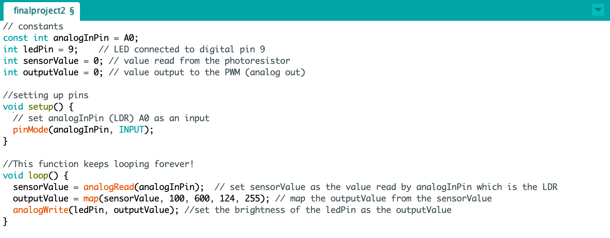

Final Assignment: Magic Mirror

Here is my Final Project: a mirror that lights up and changes brightness!
Demo
If it doesn't work in your browser, the demo can also be found here: Mirror Demo!.
This demo shows the brightness of the mirror lights changing as I shine a light on the LDR fastened to the back of the mirror As the LDR senses a bright light, the ligths around the mirror dim and vice versa. This means when the light in the room dims while you're getting ready, you won't be blinded by your mirror!
Circuit

For simplicity's sake, I only put 3 LEDs in sequence although there are about 60 in the strip I used. I utilized the mini breadboard for easy implementation onto the back of the mirror. I utilized a 10k resistor when connnecting the transistor to the LED strip, ground, and pin 9. I also utilized the LDR component connected with a 1k resistor (voltage drop = 1.8V; V = IR; 5v-1.8V = 20mA x R; 3.2V/.02A = 160 ohms; used 1k to be safe). This is connected to the input pin A0 and the input is used to control the brightness through the code (see below).
Schematic
The schematic shows the connection between the 12V power supply to the LED strip and the power supply to ground. The other side of the LED strip is then connected to the 3rd pin of the transistor which is also connected to pin 9 (middle) with a 10k resistor and ground. The transistor controls the higher voltage of the power supply with a 10k resistor to protect the components. I used about 30 LEDs from the strip which translates to about 1.8 watts (300LEDS/18W = 30LEDS/xW). Using P=IV, 1.8W = I(12V), I = .15A. The transistor can handle up to .6A, so my circuit is safe.
Code
The code shows the LDR as an input and these values are mapped to control the brightness of the LED strip through pin 9. See code comments for more info!